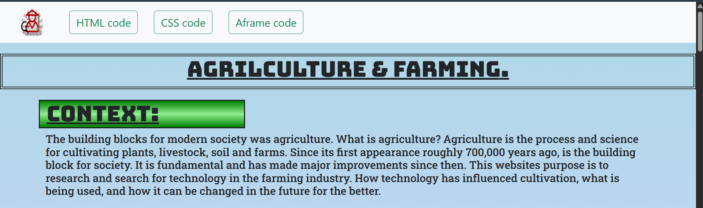

I am a student at HSTAT in the Software Engineering Program. The "Freedom Project" for SEP10 is a year-long project all about making a website that informs the viewer of the current and future innovations in the topic of my choosing.
For my project, I chose the topic of Agriculture And Farming. Its hardware and software technologies as well as future ideas. The project offers websites to softwares farmers have and can use to check their produce, budget/determine how much profit can be made and organise things. As well as websites that show hardwares and machines farms have to make farming efficient and easier for crops to flourish.
I used HTML, CSS, Bootstrap, and Github. I also chose to independently study Aframe in order to help me make my website. Aframe is a website that you can input into your HTML code where you can use shapes to 3D model and design anything you like. They also offer VR options for anyone making VR games or projects.
Throughout my time researching and then presenting my project, I had a lot of hardship, but also a lot of fun, where time manangement, keeping somethings simple is sometimes better, and pushing to new heights can achieve great success. Moving forward, Im going to continue my work process and see if I can improve.
